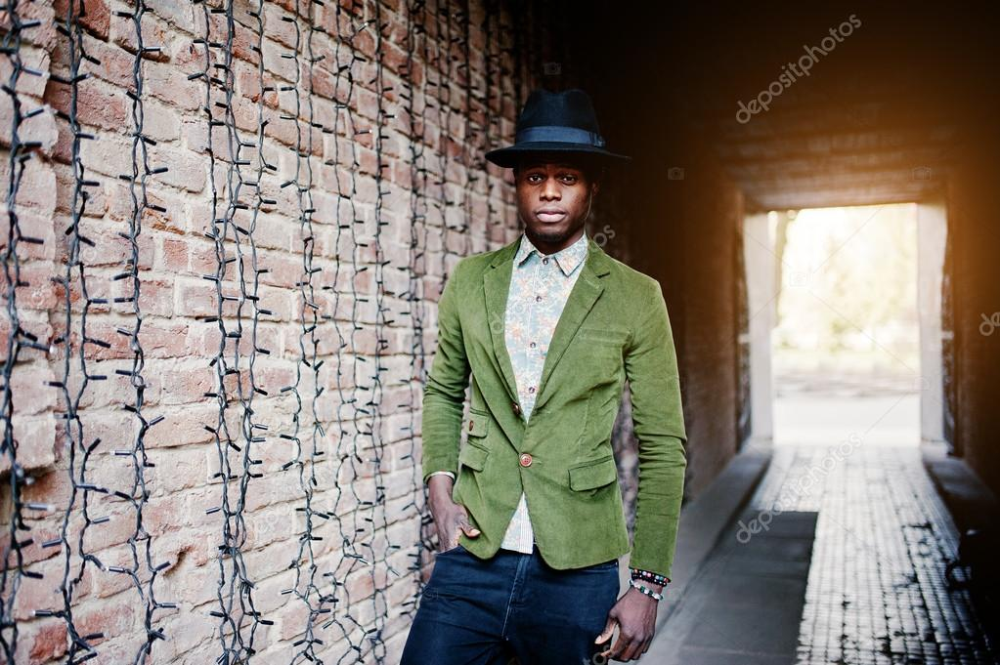
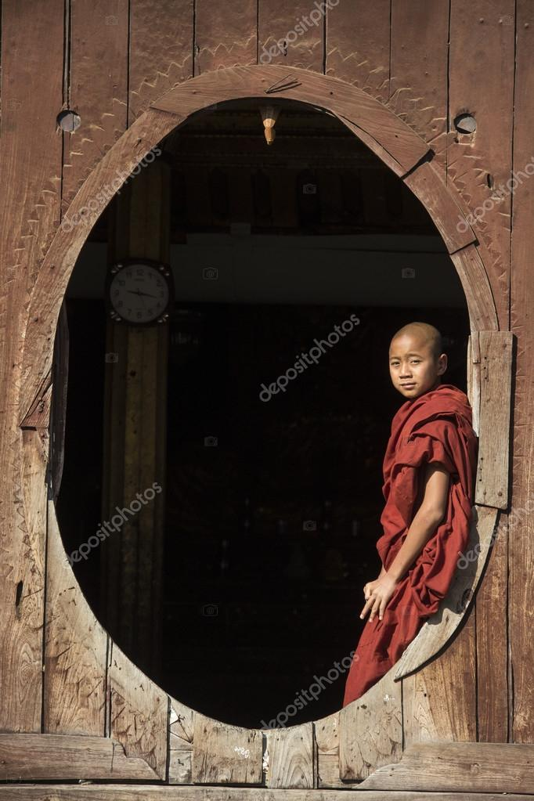
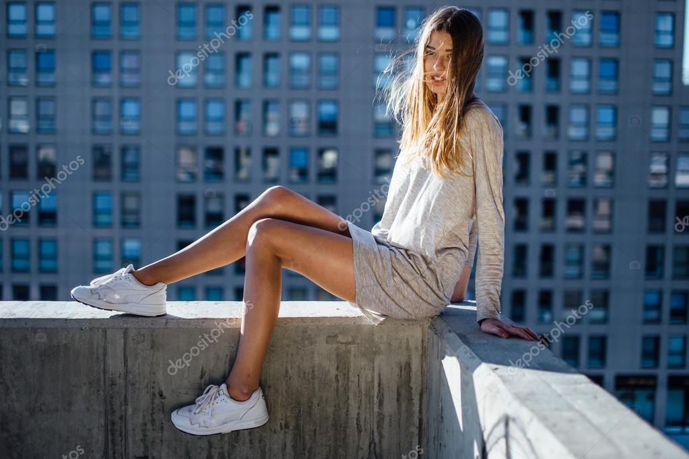
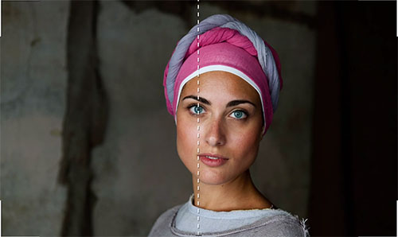
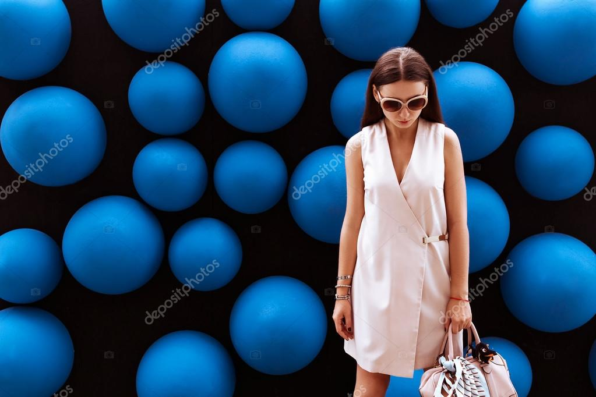
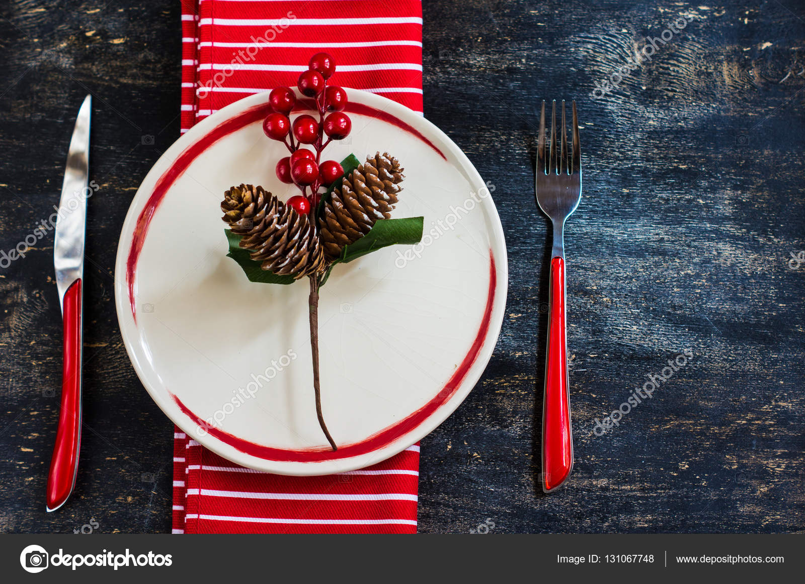

Photography is all about creativity, inspiration, and sharing your unique artistic vision. With all the freedom, is there really any space for rules? Yes! Photography composition rules should always be kept in mind because they are fundamental in excelling as a photographer. Your basic knowledge of photography composition rules will give you the tools to experiment as you work on improving and establishing your style.
Even if you know all these photography composition rules well, polishing up on some basics might just ignite a spark of creativity in you. Let’s take a look at all the composition rules that exist out there and figure out how you can work towards embracing (or breaking) them. Keep in mind, that you can buy images in this article to keep a small reminder about the 10 simple rules of composition in photography.
With the rule of thirds, you have to train yourself to split your camera screen into a grid. Keep in mind the key points of intersection and place important elements along those lines for visual appeal. This asymmetric composition in photography works well for any genre including landscapes, still-life photography, and portraits.
The Golden Ratio differentiates from the rule of thirds by the balance of the photograph. Here, the focus of the photograph is more in the center (with more details). The roots of this rule go back centuries and can be found in notable works of art. In essence, it is the perfect balance with the ratio of 1 to 1.618, and you can search for this to understand the proportions in photography, architecture, and art.
Take advantage of the structures and the lines of natural landscapes. Use them in proportion to your subjects to lead the eye into the picture. A centered and symmetrical photography composition is the most preferable one in this case to help the viewer focus on your subject or object.
One thing about diagonal lines that differentiates it from other composition techniques is that the lines help create movement in the photograph even when your subjects are still. This is a great tip for photographers that want to step outside of perfect compositions yet still create appealing photography compositions with the help of diagonal lines.
As you plan how to frame your shots, consider that outside structures can serve as natural frames. This can be things like windows or doors so use them to your advantage! This composition in photography is also called frame-withing-the-frame. What makes a photograph like this interesting is that it is soothing to an eye that we’re seeing a neat frame that is already part of the shot.
Try to focus on your subjects and make them stand out by narrowing in on the contrast between the subject and the background. The more contrast, the more dramatic your shots and the more prominent your subject. A winning photo composition also remains the one where your main subject is isolated due to the contrast solution.
Hint for photography composition with two subjects in the photo. Use the Golden Ratio rule or the rule of thirds to balance your image.
Get up close and personal with your subjects. Have them fill in the frame so that they are the focus and the dominant feature of the photograph. Note how in this photo composition example, the background was used as a pattern to fill in the frame.
When photographing people, place the dominant eye in the center of the photograph. This makes the photograph more luring as it appears that the subject’s eyes are following the viewer.
There is a reason why we love patterns – they are aesthetically pleasing to the eye. Another aspect to explore is including something in your photograph that interrupts a pattern as a way of including an element of surprise.
There are beauty, simplicity and a certain type of elegance in a photograph that is perfectly symmetrical. It’s pleasing to the eye and a sure way to catch the attention of many. The same goes for a slight variation of the style; asymmetrical shots that include empty space for visual interest (use the first photo composition rule in this list to find out where to place your subject).
These are just 10 of the most noteworthy rules of composition in photography. But how do you improve your photography composition skills if none of these principles are applicable? All things aside, you know better than anyone else that rules are meant to be broken. The most important thing is that you develop your personal photography style and push forward your aesthetics and your unique vision. That’s the one rule you should stand by 100% of the time.